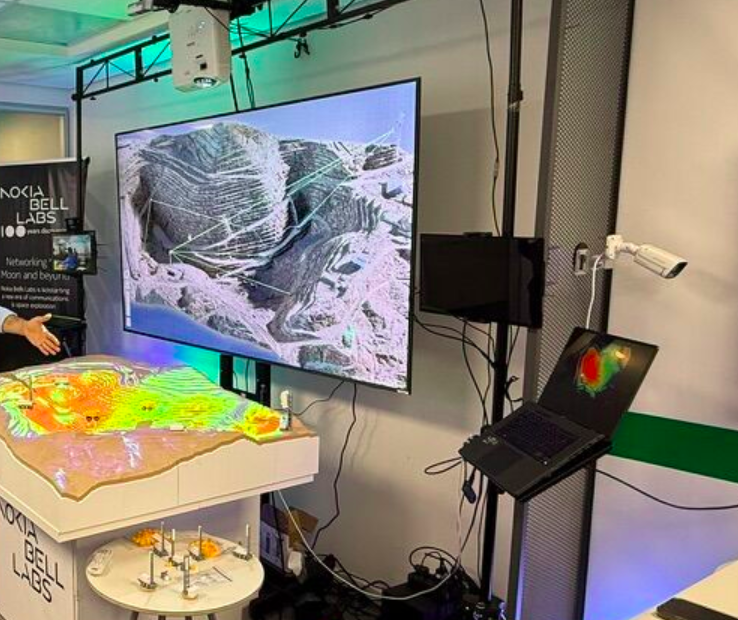

01 · Nokia · April 2025 — March 2026
Automation for the Nokia CDM black box

An automation framework and a master console that orchestrates several interfaces and runs tests on Nokia’s CDM black box. The console is the place a team plans a run, executes it, and reads the result.
- Python
- Django
- FastAPI
- MQTT
- Robot Framework
- Allure
- JavaScript
- Docker
- Worked with stakeholders and product managers on requirements, scope, and estimates, so the plan matched the time and the people available.
- Containerised the stack with Docker so a run starts the same way on every machine.
- Built a Test Management module end to end: the business rules, and the API layer the console uses to run and track tests.